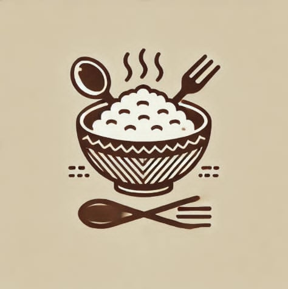

Welcome to Sarap ng Lutong Bahay!
Enjoy our warm, home-cooked meals made with fresh ingredients!
Browse our menu and order your favorite dishes today!
Paborito ng Bayan
Pork Adobo

Sinigang

Lechon Kawali
GENERAL TIPS
- Always taste your food as you cook to adjust seasoning.
- Use fresh ingredients for the best flavor and nutrition.
- Let meat rest before slicing to keep it juicy and tender.
- Clean as you go to make cooking more enjoyable.
Serving Lutong Bahay Since 1995
Loyalty Program & Rewards
Suki Card – Eat 5 Times, Get 1 Ulam Free!
Every meal purchased = 1 stamp.
Collect 5 stamps and claim 1 free ulam of your choice.
Valid for dine-in and takeout.

Operating Hours
Monday - Friday: 10:00 AM - 8:00 PM
Saturday - Sunday: 9:00 AM - 9:00 PM
Visit us for freshly cooked meals every day!
We’d Love to See You Again!
Join our community of food lovers and enjoy daily meals filled with tradition, warmth, and flavor.
Don't forget to bring your Suki Card and earn a stamp every time you visit!